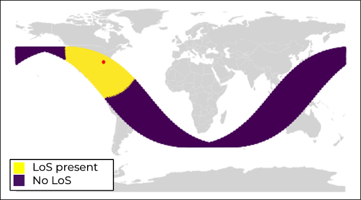

The Radiation And Trajectory Simulator (RATS) tool is a Python-based tool used to model the interaction between an antenna's propagating radiation pattern and an on-orbit satellite. RATS combines a database of three-dimensional models, trajectory information, and sensor data to predict when and if a specific satellite should able to detect radiation from a transmitting radio frequency (RF) source.
At a high level, RATS is meant to complement other software tools developed by Slingshot Aerspace, including the Physically High-Fidelity Astrodynamics Simulation Engine (PHASE). the High-Accuracy EMI Remediation System (HAERTS), and Beacon.
For this reason, RATS shares many common elements with other software products developed at Slingshot Aerospace. For instance, RATS shares a common coordinate system (J2000) with PHASE, allowing the same trajectory data to be used on both platforms. Additionally, the heatmap format used by HAERTS is used within RATS to ensure the results from the latter can be easily integrated into the former.
At a low level, RATS comprises three main sections. Simulation of the antenna's radiation is handled via the Numerical Electromagnetics Code (NEC) -- a well-known and highly-validated software used across the RF industry. Trajectories are read in using a JSON file exported from PHASE. Lastly, the satellite CAD models are externally developed using Blender; once sized to realistic dimensions, the resulting geometry is stored for future use and modification.
The RATS satellite currently comprises 23 different models ranging from ACRIMSAT to Uydu, each sized to realistic dimensions.
NEC's antenna modeling capabilities allow the user to build and place arbitrary antenna geometries across a variety of frequencies.
Realistic satellite trajectories are shared with the Physically High-Fidelity Astrodynamics Simulation Engine (PHASE).
Among other items, RATS produces a portable, intuitive, and interactive three-dimensional visualization to enhance the user's understanding.
From its inception, RATS was built as a tool to work with existing Slingshot sotware products such as Beacon, HAERTS, and Seradata.
The Radiation And Trajectory Simulator (RATS) tool is a Python-based tool used to model the interaction between an antenna's propagating radiation pattern and an on-orbit satellite. RATS combines a database of three-dimensional models, trajectory information, and sensor data to predict when and if a specific satellite should able to detect radiation from a transmitting radio frequency (RF) source.
At a high level, RATS is meant to complement other software tools developed by Slingshot Aerspace, including the Physically High-Fidelity Astrodynamics Simulation Engine (PHASE). the High-Accuracy EMI Remediation System (HAERTS), and Beacon.
For this reason, RATS shares many common elements with other software products developed at Slingshot Aerospace. For instance, RATS shares a common coordinate system (J2000) with PHASE, allowing the same trajectory data to be used on both platforms. Additionally, the heatmap format used by HAERTS is used within RATS to ensure the results from the latter can be easily integrated into the former.
At a low level, RATS comprises three main sections. Simulation of the antenna's radiation is handled via the Numerical Electromagnetics Code (NEC) -- a well-known and highly-validated software used across the RF industry. Trajectories are read in using a JSON file exported from PHASE. Lastly, the satellite CAD models are externally developed using Blender; once sized to realistic dimensions, the resulting geometry is stored for future use and modification.
| Name | Uydu |
| Cost [$] | 600,000,000 |
| Manufacturer | TAI |
| Duration [years] | 15 |
| Orbit altitude [km] | 35,785 |
| Max. velocity [km/s] | 11,051 |
| Dy mass [kg] | 1,577 |
| NORAD ID | - |
| Uplink [GHz] | 7.3 - 18.10 |
| Downlink [GHz] | 11.70 - 12.75 |
| Reference frame | Geocentric |
| Regime | Geostationary |
Launched in 2024, the Uydu satellite was manufactured by the Turkish Aerospace Industries for roughly $600,000,000. The satellite's mission is
Construction-wise, the Uydu satellite comprises a main body and two solar panel arrays extending laterally to its side. For power consumption, the solar panels can be rotated to face the sun.